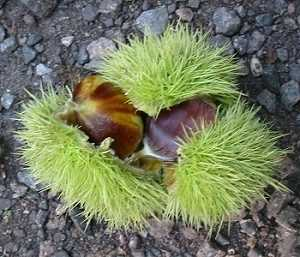

|
| Woher kommt der Name Esskastanie?
 | Die Früchte heißen Kastanien. Sie sind essbar.
Dieser Baum hieß schon bei den Römern Castanea.
Sie pflanzten die Esskastanien in Weinbaugebieten. Die Zweige benutzten sie als Stöcke, an denen sie die Weinreben festbanden.
Auf Englisch heißt die Esskastanie
Chestnut. |